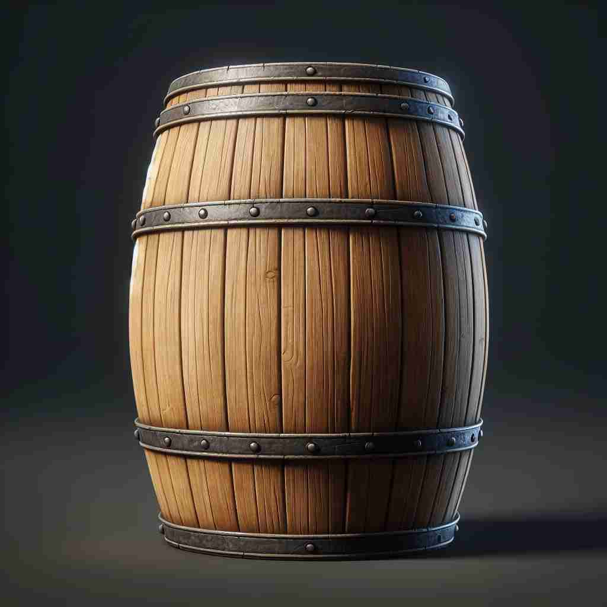

💬 They stored the wine in a wooden barrel. 他们把酒储存在一个木桶里。

💬 The wooden barrel is used to store wine. 木桶用于储存葡萄酒。
💬 They stored the wine in a wooden barrel. 他们把酒储存在一个木桶里。
💬 The wooden barrel is used to store wine. 木桶用于储存葡萄酒。
🧠 想象一个圆桶（barrel）的形状和功能。这个基本形象可以帮助你联想到各种相关概念：容器、容量、类似形状的物体部分（如枪管），以及滚动的动作。通过这个核心概念，你可以更容易理解和记忆'barrel'的多重含义。
🔈 ['bær(ə)l]
🗝️ n. a large round container with curved sides and flat ends 一个两端平坦、中部弯曲的大型圆形容器
🎭 在一个老旧的酒窖中，工人们正在堆叠装满葡萄酒的大木桶。每个木桶都有圆弧形的侧面和平坦的桶盖，散发出陈酿香气，展示了'barrel'作为大圆形容器的典型样子。
💬 The wine is stored in oak barrels. 酒被储存在橡木桶中。
🌳 这个单词由词根 "barr-"（可能源于拉丁语 "barra"，意为障碍或栅栏）和后缀 "-el" 组成。整体表示一个大圆筒，通常用于存储液体。
💡 记忆 "barrel" 时，可以联想为一个 "大的容器"，就像一个桶阻挡在你面前，为容纳液体而设。把 "障碍" 和 "容器" 的概念结合起来，就能更容易记住它的用途。
🗝️ n. the amount that a barrel can hold 桶的容量
🎭 在一个繁忙的港口码头，工人们正在将桶装油搬到船上。船长查看装载量，说道：'这艘船可以装载千桶石油。' 此处的'barrel'指的是容器所能盛装的量。
💬 The company produces thousands of barrels of oil per day. 该公司每天生产数千桶石油。
🤔 从容器延伸到容器的容量
🗝️ n. a tube-shaped part of certain objects 某些物体的管状部分
🎭 在一个射击训练场，教练正拿着一把手枪，指着枪管部分对学员说：'枪管的设计对于射击精度至关重要。' 这里的'barrel'指的是枪或者其他物品的管状部分。
💬 The barrel of the gun was still hot after firing. 枪管在射击后仍然很热。
🤔 形状类似于桶的圆筒形部分
🗝️ v. to move very quickly and often in an uncontrolled way 以非常快的速度和常常不受控制的方式移动
🎭 在繁忙的城市街道上，一辆车突然飞驰而过，司机显然失去了控制。行人们惊愕地观看，车子以'barrel'的速度横冲直撞。这里展示了'barrel'作为快速且失控移动的动词用法。
💬 The truck came barreling down the hill. 卡车猛冲下山。
🤔 像桶一样快速滚动的动作
🗝️ n. the part of a horse's body between its shoulders and hips 马肩与髋部之间的身体部分
🎭 在一个阳光明媚的牧场，马术教练正在给学员讲解马的身体结构。他轻轻拍了拍马的侧腹，说：'注意训练时的姿势，马的这部分，我们称之为'barrel''。这里指的是马肩膀和臀部之间的身体部分。
💬 The horse had a strong, muscular barrel. 这匹马的身躯强壮，肌肉发达。
🤔 形状类似于桶的马身躯干